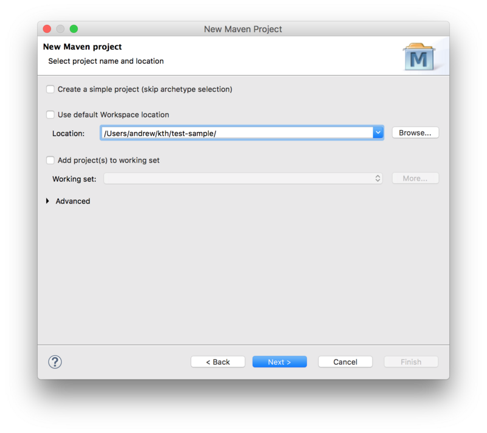

Create an Eclipse Lyo project
The steps below guide you through the necessary steps of creating a Java project with the necessary configurations to develop any OSLC server/client using Lyo. The instructions assume you are using the Eclipse IDE, but should be equally valid for any other development environment.
Table of Contents
- An alternative to the manual steps below
- Introduction
- Set up Eclipse
- Decide if you want to adopt JAX-RS 1.0 or 2.0?
- Create a Maven project
- Customise the project POM file
- Customise the web configuration
- (Optional) Provide OpenApi/Swagger Support
- Add OpenApi/Swagger Maven dependencies
- Co-host Swagger UI with your server
- Add Swagger-Core's JAX-RS Providers to your Application
- Configure Swagger's Servlet in the web.xml
- Add OpenApi Annotations (Almost Optional)
- Access the Swagger UI interactive console
- Access OpenAPI specification document (yaml file)
- (Optional) Provide TRS Support
- Run the server
An alternative to the manual steps below
An alternative to the instructions on this page is to instead use Lyo Designer to quickly generate the project, including a very basic code skeleton. The generated project will also include the neccessary setup for OpenApi/Swagger support, TRS, etc.
- Make sure your environment is setup for Lyo development as instructed on Eclipse Setup for Lyo-based Development
- install Lyo Designer
- Follow the Create a Modelling Project instructions (Only this particular section) to create the Eclipse project.
- Follow the Adapter Interface instructions (Only this particular section) to create a single Adaptor Interface in the model. You do not need to create any additional elements, such as a Service Provider Catalog, Service Provider, etc. Just make sure you set the generation settings as expected.
- Follow the Generate Lyo Java code instructions (Only this particular section) to generate your basic project setup.
- You are done! But of course, you can proceed with Lyo Designer to model your complete OSLC Server/Client and generate even more of your project code.
Introduction
In the instructions below, we assume the following parameters, which you will need to adjust for your particular project:
- Eclipse Project Name: adaptor-sample-webapp
- Base Package Name for Java Classes: com.sample.adaptor
We will here only create the code skeleton. The Toolchain Modelling Workshop can then be used to generate the necessary code to become a fully functional server.
As a complement when following the instructions below, you can find sample projects under the Lyo Adaptor Sample Modelling git repository.
- For Lyo 4.1.0, please refer to the
main-4.xbranch. - For Lyo 5.0.0-SNAPSHOT, please refer to the
main-5.xbranch. - For Lyo 2.4.0, please refer to the
main-2.xbranch.
Creating the project consists of these steps:
- Setup Eclipse
- Decide if you want to adopt JAX-RS 1.0 or 2.0?
- Create a Maven project
- Customise the project POM file
- Customise the web configuration
- (Optional) Provide OpenApi/Swagger Support
- (Optional) Provide TRS Support
- Run the server
Set up Eclipse
Make sure your environment is setup for Lyo development as instructed on Eclipse Setup for Lyo-based Development
Decide if you want to adopt JAX-RS 1.0 or 2.0?
Starting with version 4.0.0, Lyo supports JAX-RS 2.0, and no longer depends on any particlar implementation of JAX-RS. This gives the developer the chance to adopt any preferred implementation such as Jersey, RESTEasy, etc.
Older Lyo releases (2.x) only supported JAX-RS 1.0 and required Apache Wink implementation, which is retired to Apache Attic since 2015). They also relied on "HP Labs" Jena. We recommend you adopt the latest versions of Lyo.
The instructions below will vary depending on the Lyo version to be adopted. We will refer to the version as ${version.lyo}, which can then take one of the two values:
- 4.1.0
- 2.4.0 (unsupported)
Create a Maven project
To create a Maven project from an archetype via Eclipse
- select File -> New -> Other
- then select Maven Project under Maven group.
- Leave the Create a simple project checkbox unchecked.
- Uncheck the Use default Workspace location option and point it to the project root
- Press Next

Next, select the maven-archetype-webapp archetype:

Next, Fill in the Group Id, Artefact Id, and the Package Base.
- The Package Base value (
com.sample.adaptoron this page) will be used as a base package for your server code.

You should now have the project in Eclipse and the following folder structure:

Customise the project POM file
We now need to modify the project pom.xml file.
Setup general POM properties
We need to make sure our project uses UTF-8 and JDK 1.8+ (Lyo 5.0 requires JDK 11+). We will also use properties to define a common version for Lyo packages:
<properties>
<project.build.sourceEncoding>UTF-8</project.build.sourceEncoding>
<project.reporting.outputEncoding>UTF-8</project.reporting.outputEncoding>
<maven.compiler.source>1.8</maven.compiler.source>
<maven.compiler.target>1.8</maven.compiler.target>
<version.lyo>ENTER-LYO-VERSION-HERE</version.lyo>
</properties>
In the snippet above, ENTER-LYO-VERSION-HERE is either 5.0.0 or 2.4.0 (not supported since December 2020!), depending on your choice of JAX-RS version.
(Optional) Add Lyo repositories
A Lyo project will use Lyo dependencies that we need to declare. All necessary Lyo dependencies are available on Maven Central starting with Lyo 4.0.0. If you are using Lyo 2.x, you need to add the following entry:
<repositories>
<repository>
<id>lyo-releases</id>
<name>Eclipse Lyo Releases</name>
<url>https://repo.eclipse.org/content/repositories/lyo-releases/</url>
<snapshots>
<enabled>false</enabled>
</snapshots>
</repository>
</repositories>
If you wish to use the latest development snapshots, you will need the following entry:
<repositories>
<repository>
<id>lyo-snapshots</id>
<name>Eclipse Lyo Snapshots</name>
<url>https://repo.eclipse.org/content/repositories/lyo-snapshots/</url>
<releases>
<enabled>false</enabled>
</releases>
</repository>
</repositories>
SLF4J package dependencies
Lyo uses SLF4J for logging, leaving the choice of the actual logging library to use. We will use the simplest option:
<dependency>
<groupId>org.slf4j</groupId>
<artifactId>slf4j-simple</artifactId>
<version>1.7.36</version>
<scope>runtime</scope>
</dependency>
Servlet dependencies
We require Java EE 6 or higher and JSTL:
<dependency>
<groupId>javax.servlet</groupId>
<artifactId>javax.servlet-api</artifactId>
<version>3.1.0</version>
<scope>provided</scope>
</dependency>
<dependency>
<groupId>javax.servlet</groupId>
<artifactId>jstl</artifactId>
<version>1.2</version>
</dependency>
JAX-RS implementation dependencies
Lyo depends on JAX-RS APIs and your application needs to add implementations of those APIs.
For Lyo 5.x
For Lyo release 5.0.0 and above, you will need to choose a JAX-RS 2.0 implementation. If you are using Jersey, you should use version 2.35. Note that starting with Jersey 2.26, HK2 is not bundled with the core artifacts (see the Jersey migration guide).
<dependency>
<groupId>org.glassfish.jersey.core</groupId>
<artifactId>jersey-server</artifactId>
<version>2.35</version>
</dependency>
<dependency>
<groupId>org.glassfish.jersey.containers</groupId>
<artifactId>jersey-container-servlet</artifactId>
<version>2.35</version>
</dependency>
<dependency>
<groupId>org.glassfish.jersey.inject</groupId>
<artifactId>jersey-hk2</artifactId>
<version>2.35</version>
</dependency>
For Lyo 4.x
For Lyo release 4.0.0 and above, you will need to choose a JAX-RS 2.0 implementation, such as Jersey, RESTEasy, etc. Below is an example for Jersey.
<dependency>
<groupId>org.glassfish.jersey.core</groupId>
<artifactId>jersey-server</artifactId>
<version>2.25.1</version>
</dependency>
<dependency>
<groupId>org.glassfish.jersey.containers</groupId>
<artifactId>jersey-container-servlet</artifactId>
<version>2.25.1</version>
</dependency>
For Lyo 2.4.0 and earlier
For Lyo release 2.4.0 (and earlier), a Lyo package includes a dependency to the Apache Wink implementation.
<dependency>
<groupId>org.eclipse.lyo.oslc4j.core</groupId>
<artifactId>oslc4j-wink</artifactId>
<version>${version.lyo}</version>
</dependency>
Lyo dependencies
The minimal Lyo dependencies are:
<dependency>
<groupId>org.eclipse.lyo.oslc4j.core</groupId>
<artifactId>oslc4j-core</artifactId>
<version>${version.lyo}</version>
</dependency>
<dependency>
<groupId>org.eclipse.lyo.oslc4j.core</groupId>
<artifactId>oslc4j-jena-provider</artifactId>
<version>${version.lyo}</version>
</dependency>
<dependency>
<groupId>org.eclipse.lyo.oslc4j.core</groupId>
<artifactId>oslc4j-json4j-provider</artifactId>
<version>${version.lyo}</version>
</dependency>
OSLC OAuth support
If your server needs to support OAuth, include the following:
<dependency>
<groupId>org.eclipse.lyo.server</groupId>
<artifactId>oauth-core</artifactId>
<version>${version.lyo}</version>
</dependency>
<dependency>
<groupId>org.eclipse.lyo.server</groupId>
<artifactId>oauth-consumer-store</artifactId>
<version>${version.lyo}</version>
</dependency>
<dependency>
<groupId>org.eclipse.lyo.server</groupId>
<artifactId>oauth-webapp</artifactId>
<version>${version.lyo}</version>
<type>war</type>
</dependency>
To support OAuth, you will need to add the following JAX-RS Providers to your Application (the javax.ws.rs.core.Application subclass)
RESOURCE_CLASSES.add(Class.forName("org.eclipse.lyo.server.oauth.webapp.services.ConsumersService"));
RESOURCE_CLASSES.add(Class.forName("org.eclipse.lyo.server.oauth.webapp.services.OAuthService"));
OSLC Client support
If your OSLC server also needs to consume resources from another server, a dependency to the OSLC client package is needed:
For Lyo 4.0+
<dependency>
<groupId>org.eclipse.lyo.clients</groupId>
<artifactId>oslc-client</artifactId>
<version>${version.lyo}</version>
</dependency>
For Lyo 2.4 and earlier
<dependency>
<groupId>org.eclipse.lyo.clients</groupId>
<artifactId>oslc-java-client</artifactId>
<version>${version.lyo}</version>
</dependency>
Configure the Embedded Jetty server for quick debugging
Finally, you should use an embedded servlet container during the debugging to simplify the development process.
Replace the existing <build> entry with the Jetty configuration below, using the following customisations:
adaptor-sample is the context path that can be the same as your eclipse project name (or something more appropriate)
8080 is the port number you want to run the services on.
This will make your server available under the path http://localhost:8080/adaptor-sample
<build>
<plugins>
<plugin>
<groupId>org.eclipse.jetty</groupId>
<artifactId>jetty-maven-plugin</artifactId>
<version>9.4.46.v20220331</version>
<configuration>
<webAppConfig>
<contextPath>/adaptor-sample</contextPath>
</webAppConfig>
<reload>automatic</reload>
<scanIntervalSeconds>5</scanIntervalSeconds>
<systemProperties>
<systemProperty>
<name>jetty.port</name>
<value>8080</value>
</systemProperty>
</systemProperties>
<stopKey />
<stopPort />
</configuration>
</plugin>
</plugins>
</build>
Customise the web configuration
Modify the parameters in /src/main/webapp/WEB-INF/web.xml according to the template below.
- Adaptor Sample could be the same as your eclipse project name (or something more appropriate)
- com.sample.adaptor should be the same as the base package name for your project.
- 8080 should match the port number specified in the POM file for Jetty configuration.
ENTER-SERVLET-CLASS-HEREdepends on the Lyo version and choice of JAX-RS implementation:- For
4.0.0and higher, use the Jersey implementation:org.glassfish.jersey.servlet.ServletContainer - For
2.4.0, use the legacy Wink implementation:org.apache.wink.server.internal.servlet.RestServlet
- For
<?xml version="1.0" encoding="UTF-8"?>
<web-app xmlns:xsi="http://www.w3.org/2001/XMLSchema-instance"
xmlns="http://java.sun.com/xml/ns/javaee"
xsi:schemaLocation="http://java.sun.com/xml/ns/javaee http://java.sun.com/xml/ns/javaee/web-app_3_0.xsd"
id="WebApp_ID" version="3.0">
<display-name>Adaptor Sample</display-name>
<context-param>
<description>Base URI for the adaptor.</description>
<param-name>com.sample.adaptor.servlet.baseurl</param-name>
<param-value>http://localhost:8080</param-value>
</context-param>
<listener>
<description>Listener for ServletContext lifecycle changes</description>
<listener-class>com.sample.adaptor.servlet.ServletListener</listener-class>
</listener>
<servlet>
<servlet-name>JAX-RS Servlet</servlet-name>
<servlet-class>ENTER-SERVLET-CLASS-HERE</servlet-class>
<init-param>
<param-name>javax.ws.rs.Application</param-name>
<param-value>com.sample.adaptor.servlet.Application</param-value>
</init-param>
<load-on-startup>1</load-on-startup>
</servlet>
<servlet-mapping>
<servlet-name>JAX-RS Servlet</servlet-name>
<url-pattern>/services/*</url-pattern>
</servlet-mapping>
</web-app>
(Optional) Provide OpenApi/Swagger Support
With OSLC being based on REST, an OSLC Server can relatively easily be documented using OpenApi/Swagger.
The instructions below are based on Swagger Core JAX RS Project Setup 1.5.X, compiled for a typical Lyo project. The instructions are also partially base on Co-hosting Swagger UI with your Jersey REST API using Maven dependencies. The instructions provide the minimal settings necessary for a Lyo project.
Add OpenApi/Swagger Maven dependencies
Add the following Swagger dependency to your maven pom.xml file
For Lyo 5.0.0
Assuming you are adopting the Jersey implementation with the version specified above.
<dependency>
<groupId>io.swagger.core.v3</groupId>
<artifactId>swagger-jaxrs2</artifactId>
<version>2.1.4</version>
<exclusions>
<exclusion>
<!--should be <provided>-->
<groupId>jakarta.activation</groupId>
<artifactId>jakarta.activation-api</artifactId>
</exclusion>
</exclusions>
</dependency>
<dependency>
<groupId>io.swagger.core.v3</groupId>
<artifactId>swagger-jaxrs2-servlet-initializer-v2</artifactId>
<version>2.1.4</version>
</dependency>
For Lyo 4.1.0
Assuming you are adopting the Jersey implementation with the version specified above.
<dependency>
<groupId>io.swagger</groupId>
<artifactId>swagger-jersey2-jaxrs</artifactId>
<version>1.5.22</version>
</dependency>
For Lyo 2.4.0 and earlier
<dependency>
<groupId>io.swagger</groupId>
<artifactId>swagger-jaxrs</artifactId>
<version>1.5.17</version>
</dependency>
Co-host Swagger UI with your server
The following steps provide the end-user with an interactive console to the OSLC services, by integrating Swagger UI with your OSLC server.
Add the following plugins to the existing <plugins> entry of your pom.xml file. These plugins download and extract the necessary Swagger UI files from Swagger UI GitHub project onto your project:
<build>
<plugins>
<plugin>
...
</plugin>
<plugin>
<!-- Download Swagger UI webjar. -->
<groupId>org.apache.maven.plugins</groupId>
<artifactId>maven-dependency-plugin</artifactId>
<version>3.1.2</version>
<executions>
<execution>
<phase>prepare-package</phase>
<goals>
<goal>unpack</goal>
</goals>
<configuration>
<artifactItems>
<artifactItem>
<groupId>org.webjars</groupId>
<artifactId>swagger-ui</artifactId>
<version>3.25.0</version>
</artifactItem>
</artifactItems>
<outputDirectory>${project.build.directory}/swagger-ui</outputDirectory>
</configuration>
</execution>
</executions>
</plugin>
<plugin>
<!-- Add Swagger UI resources to the war file. -->
<groupId>org.apache.maven.plugins</groupId>
<artifactId>maven-war-plugin</artifactId>
<version>3.2.3</version>
<configuration>
<webResources combine.children="append">
<resource>
<directory>${project.build.directory}/swagger-ui/META-INF/resources/webjars/swagger-ui/3.25.0</directory>
<includes>
<include>**/*.*</include>
</includes>
<targetPath>/swagger-ui/dist</targetPath>
</resource>
</webResources>
</configuration>
</plugin>
</plugins>
</build>
Add Swagger-Core's JAX-RS Providers to your Application
Add swagger-core's JAX-RS Providers to the Application class that extends javax.ws.rs.core.Application
public class Application extends javax.ws.rs.core.Application {
private static final Set<Class<?>> RESOURCE_CLASSES = new HashSet<Class<?>>();
static
{
...
RESOURCE_CLASSES.add(io.swagger.jaxrs.listing.ApiListingResource.class);
RESOURCE_CLASSES.add(io.swagger.jaxrs.listing.SwaggerSerializers.class);
...
}
...
Configure Swagger's Servlet in the web.xml
Add the following to your web.xml:
- swagger.api.basepath depends on your particular settings, as instructed above.
<servlet>
<servlet-name>DefaultJaxrsConfig</servlet-name>
<servlet-class>io.swagger.jaxrs.config.DefaultJaxrsConfig</servlet-class>
<init-param>
<param-name>api.version</param-name>
<param-value>1.0.0</param-value>
</init-param>
<init-param>
<param-name>swagger.api.basepath</param-name>
<param-value>http://localhost:8080/adaptor-sample/services/</param-value>
</init-param>
<load-on-startup>2</load-on-startup>
</servlet>
Add OpenApi Annotations (Almost Optional)
The OpenApi documentation can be achieved with as little as adding @Api to each REST/OSLC service in your project. This is detailed in the first step below. While the remaining intructions are optional, they are highly recommended to provide a documentation that can best reflect the OSLC services.
@Api
- For each REST service (ie. OSLC Service), simply add the @Api annotation.
- (OPTIONAL) add the value and description details. The value is used to group the REST methods into common categories, helping in the structuring of the methods in the documentaton. You can give it the same value as that of the @Path annotation, collecting all REST methods for the same service together.
@Api(value = "requirements", description = "OSLC service for resources of type" + "Requirement")
@OslcService(Oslc_rmDomainConstants.REQUIREMENTS_MANAGEMENT_DOMAIN)
@Path("requirements")
@ApiOperation (Optional)
For each REST method, add the @ApiOperation Swagger annotation.
Important: In OpenApi, an operation is defined as unique through the combination of its path and method. This means that two C.R.U.D. methods for the same path are not allowed – even if they have different parameters (including Accept and Content-Type annotations).
- Example: Your OSLC Service may define two different Java methods to separately handle HTML and RDF/XML content types. OpenApi will only recognise one of these two methods, while ignoring the other.
- Workaround: Annotate ALL methods that are identified as unique with the complete list of media types in the produces property of the @ApiOperation annotation. This way, the generated documentation correctly indicates the existance of all methods.
@GET
@ApiOperation(value = "GET on Requirement resources",
produces = OslcMediaType.APPLICATION_RDF_XML + ", " + MediaType.TEXT_HTML)
@Path("{requirementId}")
@Produces(OslcMediaType.APPLICATION_RDF_XML)
public Requirement getRequirement(
@ApiModel (Optional)
For each Java class that models an OSLC-resource (@OslcName annotation), add an @ApiModel annotation that refers to the Shape of the resource, since a Shape is a more accurate description of the object, than the one automatically generated by Swagger.
@ApiModel(description = "The model below is only a object structure as derived by swagger. For a more accurate RDF Description, refer to the Requirement Resource Shape.")
@OslcNamespace(Oslc_rmDomainConstants.REQUIREMENT_NAMESPACE)
@OslcName(Oslc_rmDomainConstants.REQUIREMENT_LOCALNAME)
@OslcResourceShape(title = "Requirement Resource Shape", describes = Oslc_rmDomainConstants.REQUIREMENT_TYPE)
public class Requirement
...
Access the Swagger UI interactive console
Before you can access the Swagger UI interactive console for the first time, edit the swagger-ui/index.html file, replacing the url http://petstore.swagger.io/v2/swagger.json with the url of your own yaml file http://localhost:8080/adaptor-sample/services/swagger.yaml.
The generated interactive API console can be accessed via
http://localhost:8080/adaptor-sample/swagger-ui/
Access OpenAPI specification document (yaml file)
You can also access the OpenAPI specification document (yaml file) at:
http://localhost:8080/adaptor-sample/services/swagger.yaml
You can copy the yaml file to a Swagger Editor, to view the API documentation, as well as generate client/Server SDK code for a number of languages and platforms.
(Optional) Provide TRS Support
The TRS Server library is a set of ready-to-use classes that provide the required REST services for TRS, with minimal effort. The current implementation supports an In-memory TRS Server that does not persist its TRS resources. These classes are however designed to be extended for a persistent solution. For a thourough walkthough of TRS solutions, which among other things ensures persisting the TRS Logs, visit the additional information on TRS
Add Maven dependencies
Add a dependency for the TRS Server library:
<dependency>
<groupId>org.eclipse.lyo.trs</groupId>
<artifactId>trs-server</artifactId>
<version>${version.lyo}</version>
</dependency>
Setup the TRS JAX-RS Provider to your Application
The TRS Server library already contains a TrackedResourceSetService class that can handle the REST calls for TRS Base and ChangeLog. For this service to work, you will only need to provide a binding to a singleton of a class that implements the PagedTrs class.
Register the TRS JAX-RS Provider TrackedResourceSetService in your Application (the javax.ws.rs.core.Application subclass).
import org.eclipse.lyo.oslc4j.trs.server.service.TrackedResourceSetService;
...
public class Application extends javax.ws.rs.core.Application {
private static final Set<Class<?>> RESOURCE_CLASSES = new HashSet<Class<?>>();
static
{
...
RESOURCE_CLASSES.add(TrackedResourceSetService.class);
...
}
...
Provide the necessary binding definition for the PagedTrs class.
import java.util.Collections;
import org.eclipse.lyo.oslc4j.trs.server.PagedTrs;
import com.sample.adaptor.InmemPagedTrsSingleton;
import org.glassfish.hk2.utilities.binding.AbstractBinder;
...
public class Application extends javax.ws.rs.core.Application {
...
@Override
public Set<Object> getSingletons() {
return Collections.singleton(new AbstractBinder() {
@Override
protected void configure() {
bindFactory(new InmemPagedTrsSingleton()).to(PagedTrs.class);
}
});
}
Define the InmemPagedTrsSingleton singleton class. You will need to complete the code example below, with
- the code that populates
uriswith the intial set of resources to be managed byInmemPagedTrs. - the desired
basePageLimitandchangelogPageLimitparameters.
package com.sample.adaptor;
import java.net.URI;
import java.util.ArrayList;
import java.util.Iterator;
import javax.ws.rs.core.UriBuilder;
import org.eclipse.lyo.oslc4j.core.OSLC4JUtils;
import org.eclipse.lyo.oslc4j.trs.server.InmemPagedTrs;
import org.eclipse.lyo.oslc4j.trs.server.PagedTrs;
import org.eclipse.lyo.oslc4j.trs.server.service.TrackedResourceSetService;
import org.glassfish.hk2.api.Factory;
import org.slf4j.Logger;
import org.slf4j.LoggerFactory;
public class InmemPagedTrsSingleton implements Factory<PagedTrs> {
private final static Logger log = LoggerFactory.getLogger(InmemPagedTrsSingleton.class);
private static InmemPagedTrs inmemPagedTrs;
@Override
public InmemPagedTrs provide() {
return getInmemPagedTrs();
}
@Override
public void dispose(final PagedTrs instance) {
log.debug("{} is getting disposed", instance);
}
public static InmemPagedTrs getInmemPagedTrs() {
if(inmemPagedTrs == null) {
log.debug("Initialising 'InmemPagedTrs' instance");
ArrayList<URI> uris = new ArrayList<URI>();
//TODO: populate uris with the intial set of resources to be managed by the InmemPagedTrs instance
....
// not thread-safe
inmemPagedTrs = new InmemPagedTrs(<basePageLimit>, <changelogPageLimit>,
UriBuilder.fromUri(OSLC4JUtils.getServletURI()).path(TrackedResourceSetService.RESOURCE_PATH).build(),
TrackedResourceSetService.BASE_PATH, TrackedResourceSetService.CHANGELOG_PATH, uris);
}
return inmemPagedTrs;
}
}
The application is now ready to respond to REST requests from a TRS Client. Once running, the server will respond to requests on the relative path /trs.
Update the TRS data set
To update the set of OSLC resources that form the TRS Base and ChangeLog, simply call the following methods in your code:
InmemPagedTrsSingleton.getInmemPagedTrs().onCreated(aResource);InmemPagedTrsSingleton.getInmemPagedTrs().onModified(aResource);InmemPagedTrsSingleton.getInmemPagedTrs().onDeleted(aResource.getAbout());
Run the server
Once the server is developed, you can run it by selecting Run As ➞ Maven build ... from the project's context menu, and setting the goal to clean jetty:run-war.
You can now access your server from http://localhost:8080/adaptor-sample
- adaptor-sample and 8080 will depend on your particular settings, as instructed above.
Pro Tip: If you get the error Project configuration is not up-to-date with pom.xml, simply right click on the eclipse project and select Maven ➞ Update Project ...